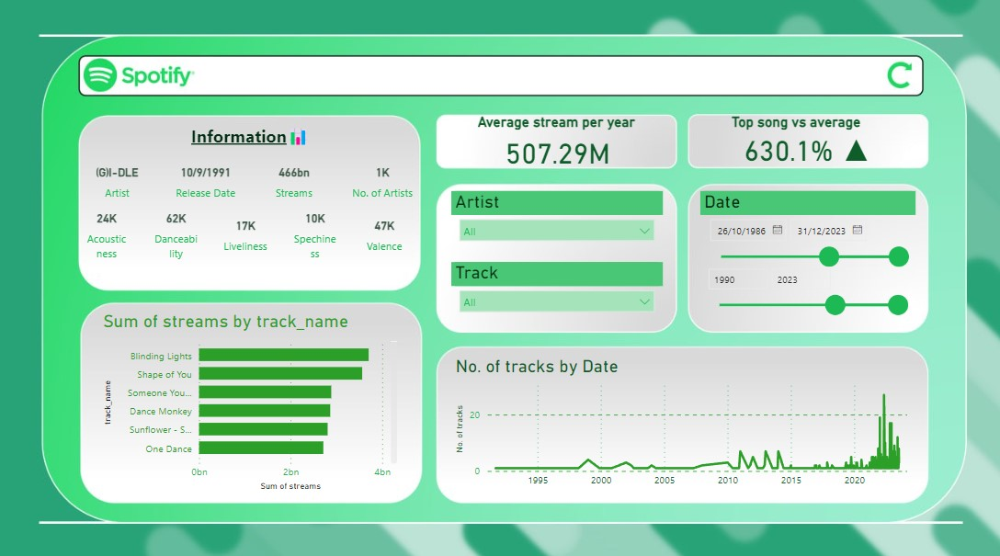
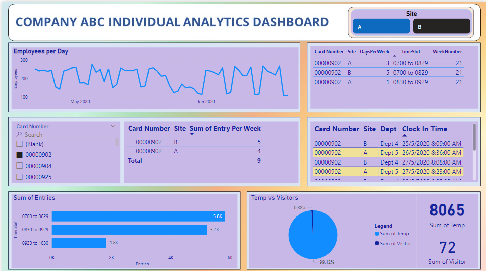
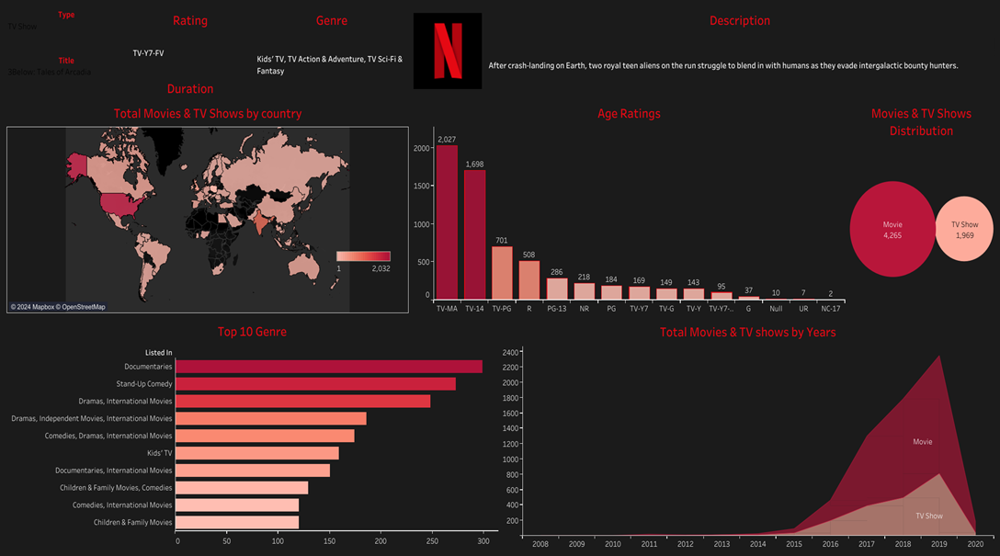
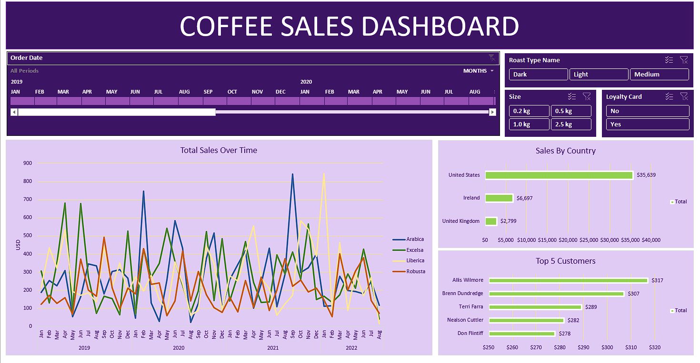

- Added new measures that utilise the current data in the dataset and produce new insights such as average streams per year
- Understanding basic tools in Power BI such as slicers, drop down bars, etc, to promote user-friendly interface
- Excel (Pivot Tables) and Power BI.

- Data cleaning with Python; utilised Pandas library to clean and transform data
- Utilised SQL to do feature engineering; frequency of employee coming into different timeslot, how many days are the employees working per week, etc.
- Utilised DAX to add leading zeros to the employee ID.
- SQL, Power BI, NumPy, Matplotlib.

- Visualise demographics and psychographics such as "Age", "Ratings", "Genre", and "Country".
- Understanding basic tools such as "Packed-bubbles", "Horinzontal Bar Chart", "Area Chart", and "Geographic Map".
- Tableau.

- Data preparation and cleaning in Excel to ensure consistency and accuracy
- Utilised pivot tables for visualisation of data, allowing dynamic updates as filters changes
- Adding slicers for easy filtering and data segmentation, and using timeline to filter specific date ranges.>
- Excel Functions: XLOOPUP, INDEX, MATCH, IFERROR, etc.
- © Chris, Tan Zheng Jie's Portfolio